Guia oficial · Dashboard Financeiro
Guia prático para organizar, acompanhar e entender os resultados do seu delivery.
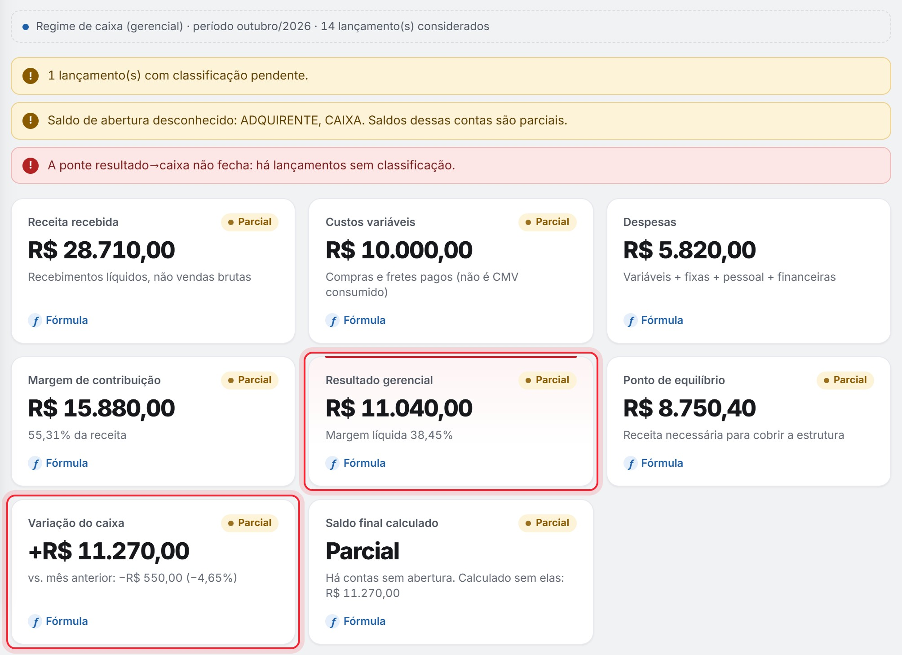
Para proprietários, gestores e equipe financeira. Todas as telas deste guia usam dados demonstrativos — nenhum dado real de cliente.
O Dashboard Financeiro reúne o dinheiro da unidade em um livro-caixa único e transforma esses lançamentos em indicadores, DRE gerencial, conciliação e relatórios. Nenhum número é digitado na tela: tudo é recalculado a partir dos lançamentos.
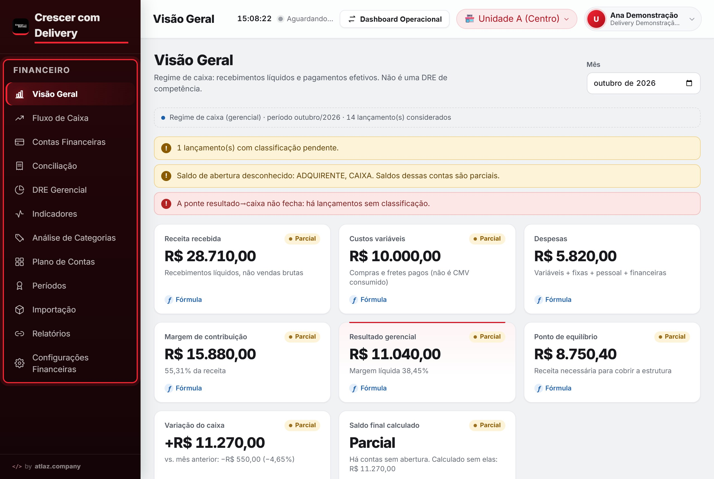
A primeira tela responde três perguntas: quanto entrou, quanto saiu e qual foi o resultado do mês escolhido. Comece sempre pelos avisos do topo — eles dizem se os números estão completos.
Lucro não é caixa
No exemplo, o resultado foi R$ 11.040,00 e o caixa variou +R$ 11.270,00. Os R$ 230,00 de diferença são um PIX ainda sem categoria: o dinheiro entrou, mas só conta no resultado depois de classificado.
Empréstimos recebidos ou pagos também mexem no caixa sem ser lucro ou prejuízo. Já a transferência entre suas próprias contas não altera nenhum dos dois.
O saldo da tela é calculado a partir dos lançamentos. Ele só vale como saldo conferido depois de comparado com o extrato do banco ou da adquirente.
| Cartão | O que mostra | Cartão | O que mostra |
|---|---|---|---|
| Receita recebida | Recebimentos líquidos que entraram nas contas — não as vendas brutas. | Resultado gerencial | Margem de contribuição − despesas fixas, com pessoal e financeiras. |
| Custos variáveis | Compras e fretes pagos no mês (não é o CMV consumido). | Ponto de equilíbrio | Receita necessária para cobrir a estrutura do mês. |
| Despesas | Variáveis + fixas + pessoal + financeiras. | Variação do caixa | Entradas − saídas do período, sem o saldo anterior. |
| Margem de contribuição | Receita − custos variáveis − despesas variáveis − tributos. | Saldo final calculado | Saldo inicial + variação. “Parcial” se alguma conta não tem saldo inicial informado. |
Em cada cartão, o link Fórmula mostra o cálculo e a origem do número. Abaixo dos cartões a tela traz o gráfico de entradas e saídas por dia (sem transferências internas), saldos e movimentação por conta, maiores custos e despesas e as pendências de classificação.
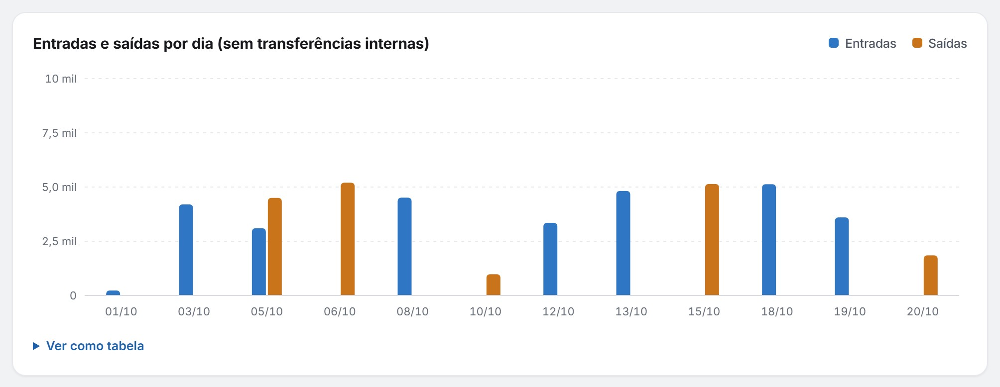
O Fluxo de Caixa é o livro-caixa único da unidade: tudo o que as outras telas mostram nasce daqui. As Contas Financeiras dizem onde esse dinheiro está.
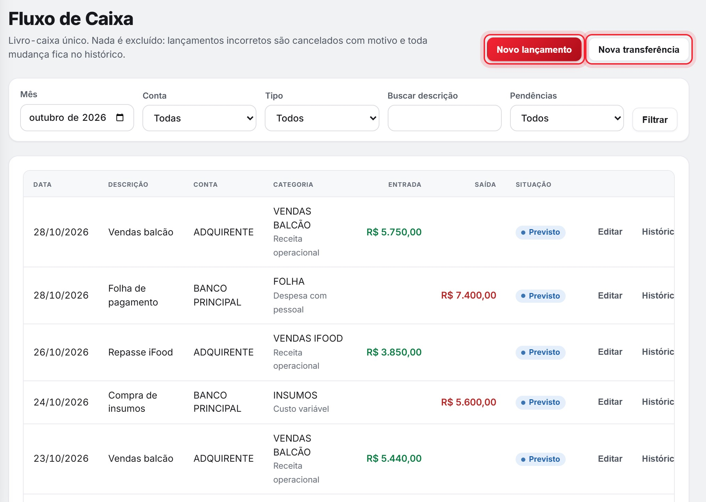
Em Novo lançamento informe conta, tipo (entrada ou saída), descrição, valor, data do movimento e categoria. Datas de competência e vencimento são opcionais.
Você levou R$ 2.000,00 da adquirente para o banco. Registre com Nova transferência: o sistema cria um par vinculado — saída de R$ 2.000,00 na origem e entrada de R$ 2.000,00 no destino. O efeito no resultado é zero. Se o valor for lançado como entrada comum com categoria de venda, a receita do mês fica inflada.
| Conta | Movimento |
|---|---|
| Adquirente | − R$ 2.000,00 |
| Banco | + R$ 2.000,00 |
| Efeito no resultado | R$ 0,00 |
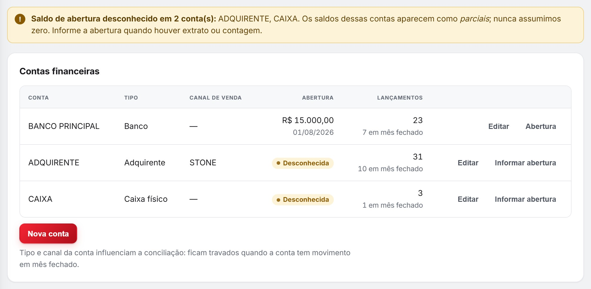
Estas quatro telas explicam de onde vem o resultado. Todas leem os mesmos lançamentos e mostram a fórmula de cada número.
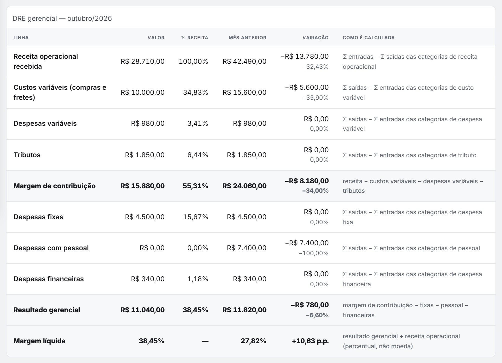
Demonstração do resultado em regime de caixa: receita = recebimentos líquidos; custos = compras e fretes pagos. Serve para gerir o negócio e não substitui a DRE contábil feita pela contabilidade.
Cada indicador traz fórmula, origem e situação: Calculado Parcial ou Indisponível. A ponte resultado → caixa mostra se o resultado explica a variação do caixa “ao centavo”.
Ranking dos custos, despesas e tributos do mês, com % do total e % acumulado. Ficam fora: transferências, saldo anterior e o principal de financiamentos.
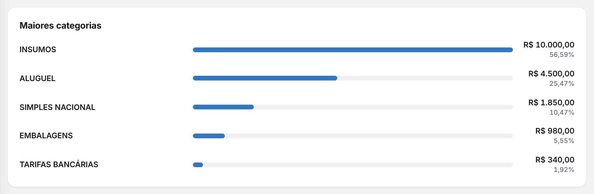
Organizado em Tipo → Natureza → Categoria. O que decide como a categoria entra nos cálculos é o seu papel:
| Papel | Exemplos |
|---|---|
| Receita operacional | Vendas balcão, repasses |
| Custo variável | Insumos, fretes de compra |
| Despesa variável · Tributo | Embalagens · impostos |
| Despesa fixa · com pessoal | Aluguel · folha |
| Despesa financeira | Tarifas bancárias |
| Financiamento · Transferência | Empréstimos · entre contas |
Categoria com lançamentos não muda de papel: crie outra e reclassifique com motivo. Categorias são desativadas, não apagadas.
A receita caiu R$ 13.780,00 em relação ao mês anterior, mas o resultado caiu só R$ 780,00. Por quê? Os custos variáveis também caíram (−R$ 5.600,00) e não houve pagamento de folha no mês (−R$ 7.400,00).
Leitura correta: a folha não deixou de existir — ela não foi paga neste mês. Em regime de caixa, compare alguns meses seguidos antes de concluir que a margem melhorou.
Quem já controla o caixa em planilha pode trazer o livro-caixa (.xlsx) sem digitar lançamento por lançamento. A importação acontece em quatro etapas, e nada é gravado antes da sua confirmação.
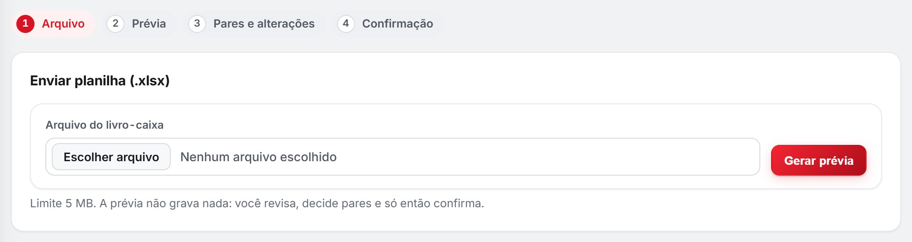
Operador envia o arquivo e gera a prévia. Gestor decide os pares e confirma a importação. Cancelar prévia descarta tudo sem gravar.
| Na prévia aparece | O que fazer |
|---|---|
| Já existentes (ignorados) | Normal ao reenviar um arquivo: essas linhas já estão no sistema e não são gravadas de novo. |
| Possíveis alterações | Compare com o lançamento original. Use “Importar como novo” só se for, de fato, outro lançamento. |
| Pendências | Serão gravadas como pendentes. Classifique depois em Fluxo de Caixa (filtro “Somente pendentes”) ou na Conciliação. |
| Totais NÃO conferem | Confira o total declarado na planilha e as linhas com fórmula; depois gere uma nova prévia. |
| Pares ambíguos | Confirme ou rejeite um a um. Sem par confirmado, o movimento fica pendente. |
Conciliar é comparar o que você vendeu — informado por uma fonte externa, como o relatório do PDV, da maquininha ou da plataforma — com o que de fato entrou no livro-caixa. Sem essa referência, a tela não calcula nem presume nada.
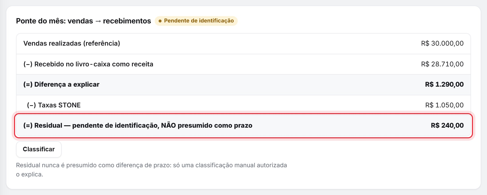
| Etapa | Valor |
|---|---|
| Vendas no canal STONE (referência) | R$ 30.000,00 |
| (−) Recebido no livro-caixa | R$ 28.710,00 |
| (=) Diferença a explicar | R$ 1.290,00 |
| (−) Taxas STONE (referência) | R$ 1.050,00 |
| (=) Residual | R$ 240,00 |
O residual de R$ 240,00 fica pendente de identificação. Investigue: um repasse que caiu em outro dia? Um estorno? Uma taxa extra?
Use Classificar: escolha o motivo (diferença de prazo, taxa, ajuste, estorno, divergência ou outros), informe o valor explicado — pode ser parcial — e escreva a justificativa. A classificação fica na auditoria e pode ser revogada com motivo.
Não crie lançamento fictício para “zerar” a diferença e não classifique como prazo sem confirmar. O sistema nunca presume prazo sozinho: um residual em aberto é informação, não erro.
Informar referências: tipo (Vendas, Taxas, Sangrias ou Caixa em espécie), data, valor e, se quiser, canal e nota. Valor zero vale como “zero informado”.
Importar arquivo: CSV ou XLSX com as colunas DATA, TIPO, VALOR e, opcionais, CANAL e NOTA. O arquivo é validado antes de gravar e reenviá-lo não duplica.
Conferência de caixa em espécie e sangrias por dia e lista de pendências de identificação: lançamentos pendentes, movimentos com terceiros e possíveis duplicidades.
Os Relatórios transformam os lançamentos em tabelas para conferência e arquivo. Os Períodos encerram o mês: depois de fechado, ele não muda mais.
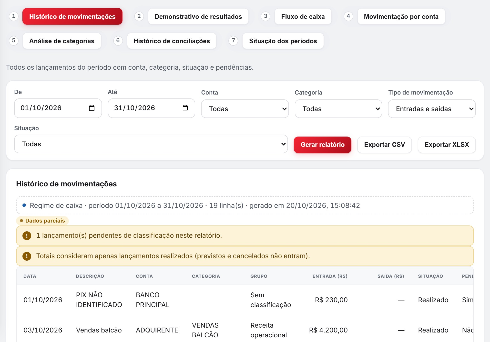
Filtros conforme o relatório: período, conta, categoria, tipo, situação, agrupamento por dia ou mês e transferências internas (excluídas por padrão).
Exportar CSV e Exportar XLSX geram arquivos com período, filtros, situação dos dados, data de geração e código de verificação. Os cálculos são os mesmos do dashboard e cobrem só a unidade selecionada.
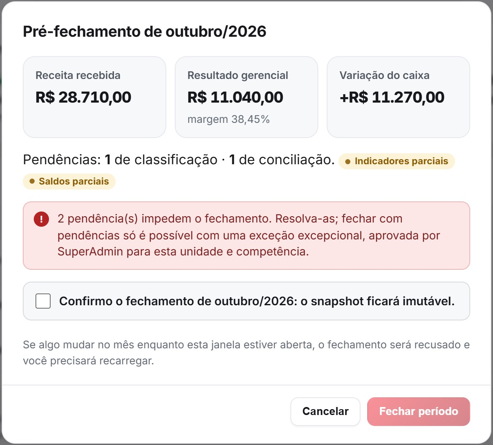
As Configurações Financeiras reúnem as regras da unidade. O acesso de cada pessoa é definido pelo administrador da plataforma em uma única tela.
Quem não é Gestor vê esta tela somente para leitura. Toda alteração fica registrada.
| Ação | Visualiz. | Operador | Gestor |
|---|---|---|---|
| Consultar telas e relatórios | |||
| Criar e editar lançamentos e transferências | — | ||
| Enviar planilha e gerar prévia | — | ||
| Conciliar e classificar diferenças | — | — | |
| Cancelar lançamentos | — | — | |
| Confirmar importação; configurar contas e plano | — | — | |
| Fechar períodos | — | — |
“Sem acesso”: a pessoa não vê o setor Financeiro.
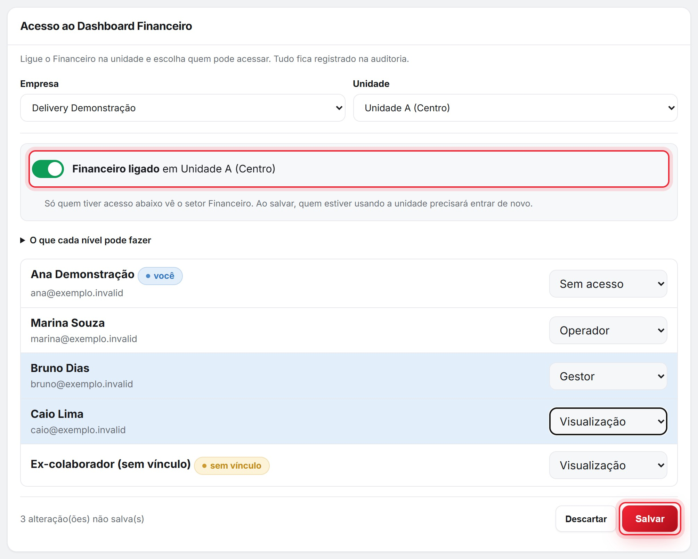
Rotina curta e frequente vale mais que um mutirão no fim do mês. Use esta página como lista de verificação.
Três contas que precisam bater antes de fechar o mês